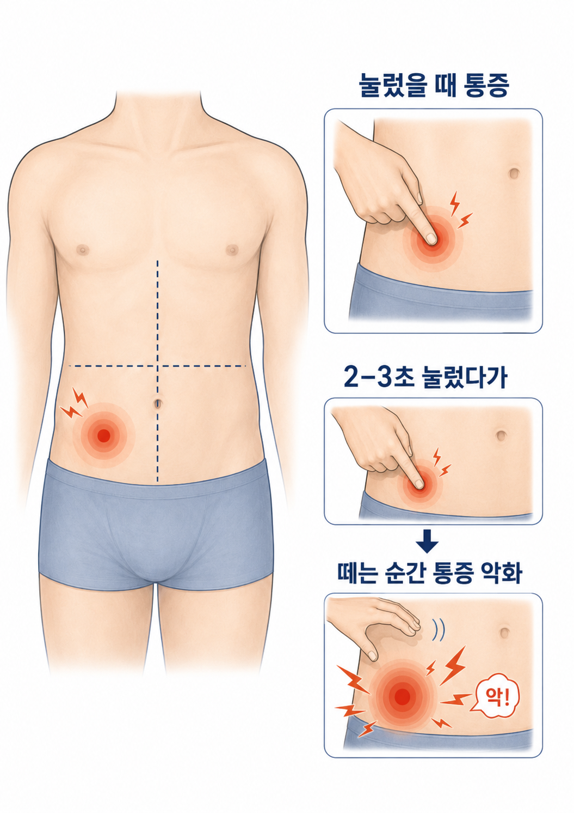

우측 하복부 통증과 반발 압통을 확인하세요

오늘 바로 확인해야 하는 신호
우측 하복부 통증이나
반발 압통이 생기면
반발 압통이 생기면
성인에서는 응급실에서 진찰과 복부 CT 등 영상검사 여부를 확인하는 것이 안전합니다. 소아는 초음파 후 필요 시 CT/MRI로 이어질 수 있습니다.
오른쪽 아랫배 통증
걷거나 기침할 때 더 아프고, 특정 부위를 누르면 뚜렷하게 아픕니다.
반발 압통
2-3초 눌렀다가 손을 뗄 때 통증이 더 심해지면 의심 신호입니다.
통증 지속·악화
장염약·복통약을 먹어도 좋아지지 않고 통증이 계속됩니다.
동반 증상
식욕저하, 구역, 발열, 무기력감이 함께 생길 수 있습니다.
응급실 영상검사 고려
우측 하복부 통증, 반발 압통, 배가 단단해짐, 걷기 어려운 통증이 있으면 맹장염·복막 자극 여부를 빠르게 확인해야 합니다.
맹장염 통증은 이렇게 시작될 수 있습니다
1
명치·배꼽 주변 불편감
초기에는 위염·체기처럼 애매한 상복부 불편감으로 느껴질 수 있습니다.
2
구역·식욕저하
설사가 뚜렷하지 않아도 속이 메스껍고 식욕이 떨어질 수 있습니다.
3
우측 하복부로 이동
진행하면 오른쪽 아랫배 압통, 움직임·기침 시 통증이 뚜렷해집니다.
4
복막 자극 신호
반발 압통, 배가 단단해짐, 통증 악화는 응급 평가가 필요합니다.
오른쪽 아랫배가 아니어도 의심해야 하는 경우
고령·소아
통증·열·압통이 약하거나 위치 설명이 어려워 장염처럼 보일 수 있습니다.
약 복용 후 지속
일반 장염약·복통약 후에도 통증이 계속되면 같은 날 재평가가 필요합니다.
다른 복통 원인
장염·위염, 요로결석, 담낭 질환, 여성 골반통도 감별이 필요합니다.